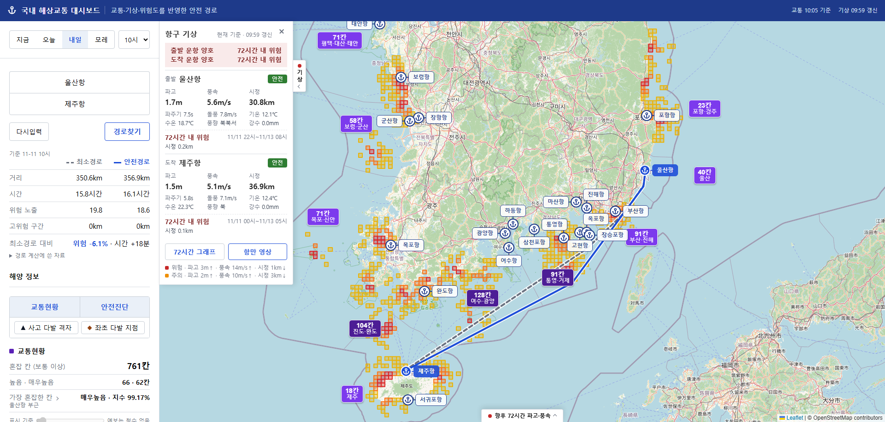

03
4인 · 팀장 · 2026.10.17 – 11.12
해상교통 안전경로 예측 시스템
교통·사고위험·날씨를 반영한 안전경로를 거리만 보는 최소경로와 함께 보여주는 출항 전 항해 계획 도구입니다.
KEY RESULT · 최소경로 대비 평균 위험점수
−22.6%
Spring Boot · Python · Leaflet

INSIDE
내 담당 · 문제 해결 3건 · 구조 · 기술 스택 · 남은 한계
프로젝트 자세히 보기
→